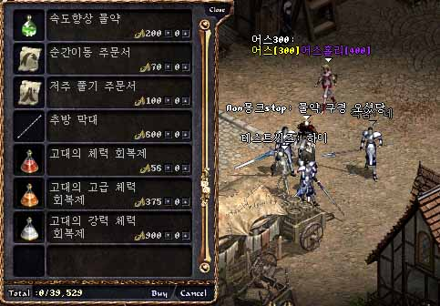
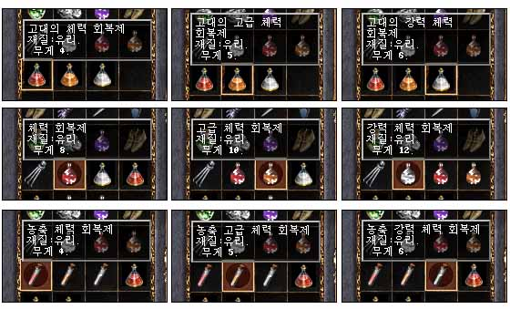
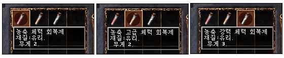

| 2003年8月23日
韓國測試伺服器8月22日更新內容 -
沒有時間延遲的古代回復藥水
來源：Lineage
Playforum (2)
日文翻譯：Lineage
Reporter's Club
韓國測試伺服器在8月22日更新內容如下：
1.
加入了古代回復藥水，古代回復藥水是沒有時間延遲的，而售價比正常藥水高約50%。
最初許多賣藥水的NPC都會售賣古代回復藥水，其後更新改為只有少數NPC會售賣。以下是最低稅率(10%)時的售價：

而以下是各種藥水的重量：

紅色的古代回復藥水大約回10-20血；
橙色的古代回復藥水大約回50血；
白色的古代回復藥水大約回60-80血。
古代回復藥水的重量比正常的輕50%，同時古代回復藥水是沒有時間延遲的，相信在攻城戰中會非常有效，這對於喜歡攻城的玩家是一大喜訊。
那麼濃縮藥水會否變成廢物呢？在之後的更新，官方再將濃縮藥水的重量再減一半，如下：

載重達4800上限的角色可以拿約1600瓶濃白...
而沒有延遲的白水威力如何？可以承受七位變身為卡斯特的玩家的攻擊。
2. N-protect的效能加強了。
美國測試伺服器8月22日更新內容
來源：美國天堂官方網站公告
1. 加入新職業黑暗妖精及新地域沉默洞穴。
2. 加入黑暗妖精15級、30級及45級任務試鍊。
3. 加入新地域夢幻之島。
4. 加入可以永久增加能力值的道具萬靈藥。
5. 加入很多新道具，包括防具及武器。
6.
加入說明及遊戲提示訊息跳出視窗。角色在升級時，遊戲提示訊息視窗會跳出提供相職業在該級的遊戲資料。玩家在登入遊戲時，遊戲提示訊息視窗亦會跳出。玩家可以在遊戲提示中不打剔號去取消那些視窗的跳出，假如要重新設定那些視窗的跳出與否，可以在遊戲選項中設定。
7.
在肯特、風木、奇岩、海音及亞丁內城區域內，HP及MP回復速度將會增加。
8. 在各大城堡的內城裡加入BBS佈告欄。
9.
在海音神殿內重登將會出現在海音村內，不會再出現在說話之島上。
10.
召喚怪物在離開主人的一定範圍後，在解散時道具將會掉在地上。
11. 所有職業可以在吉倫及哈汀裡學習基本魔法。
12. 傲慢之塔增至50層，那裡出現怪物種類及怪物難度都有重大改變，因此大家要小心探險。 |